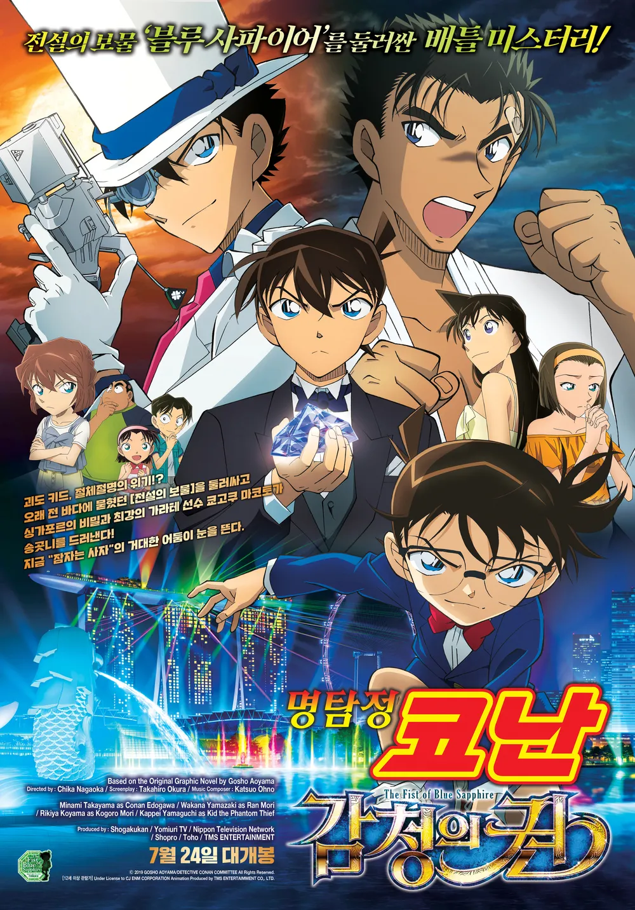

명탐정코난 : 감청의 권
방영 시기: 2018.4.12
국내 상영일:2018.7.24
2019년 4월 12일에 개봉한 명탐정 코난 극장판 제23기.
93.7억 엔의 일본 수입과
11.7천만달러의 월드 박스오피스수입을 달성했다.
스토리, 연출 등 모든 요소가 완전히 엉망진창이라는 평가가 압도적으로
높으며,
바로 이전에 최악의 극장판 중 하나로 평가 받던 제로의 집행인보다
평점이 더 내려갔다.
한국에서도 한일 무역 분쟁으로 인한 불매운동 시국과 제작사의 갑질
논란을 참작해도 평가가 굉장히 낮다.
흥행과는 별개로 일본에서도 소재 고갈, 스토리에 대한 실망, 이젠
완전히 1개월 뒤에 개봉한 극장판 원피스 스탬피드 같은 허무맹랑한 액션
영화가 되었다는 평